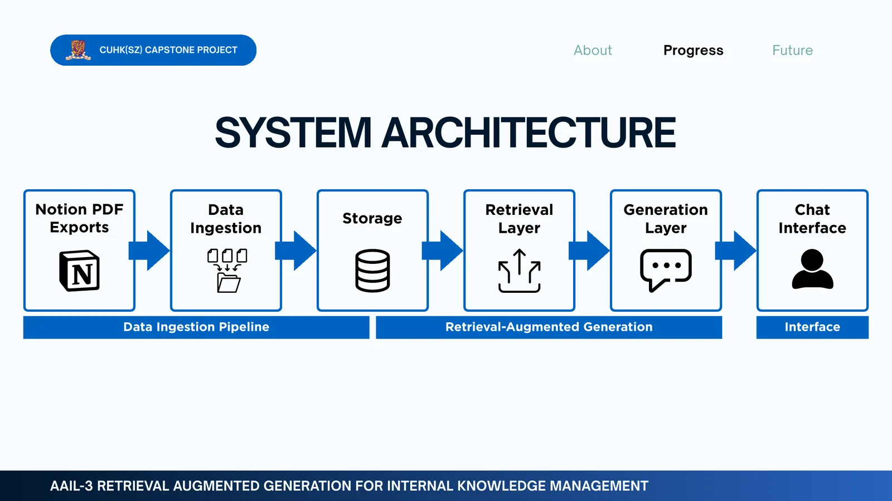

Project report artifact
Project report artifact2025 · MEDICAL AI
Diffusion Models for X-ray Image Generation
Compared DDPM and DiNO-conditioned diffusion for chest X-ray synthesis.
I’m currently pursuing a PhD in Intelligent Transportation at The Hong Kong University of Science and Technology (Guangzhou), advised by Prof. Benedict Jun MA. Before starting my PhD, I studied Data Science and Big Data Technology at CUHK Shenzhen, where I built a strong foundation in statistics and machine learning.
A lot of my recent work has been around language and multimodal AI. In 2025, I worked on offensive-speech detection at CUHK(SZ) and spent a summer at UC Santa Cruz studying vision-language models and multimodal architectures.
I also really enjoy teaching. I’ve worked as an undergraduate teaching fellow in programming, applied machine learning, and probability & statistics, which has been a great way to strengthen my own understanding while helping other students.
Outside the classroom and lab, I’ve been involved in student leadership and academic service. I enjoy work that brings together technical depth, collaboration, and something genuinely useful for people.
As I begin doctoral work in intelligent transportation, I want to explore how data analysis and machine learning can support real decisions about transportation systems—connecting the technical methods I studied in data science with practical problems.
My earlier work in language and multimodal AI gives me experience with how different forms of data are represented and modeled. As my PhD develops, I hope to carry that perspective into transportation research while keeping the work grounded in practical use.
Doctoral work at HKUST (Guangzhou), advised by Prof. Benedict Jun MA.
Offensive-speech detection at CUHK(SZ) and vision-language model research at UC Santa Cruz.
Undergraduate teaching roles across programming, applied machine learning, statistics, and simulation.
Project report artifactCompared DDPM and DiNO-conditioned diffusion for chest X-ray synthesis.

Project report artifactA capstone RAG system over internal Notion PDFs with grounded generation and multilingual chat.
Doctoral research in Intelligent Transportation; Postgraduate Studentship recipient.
Led tutorials on input/output analysis, simulation optimization, and stochastic gradient descent, including a midterm review session.
Reviewed transformer-based hate-speech detection research and collected existing datasets for supervised classification.
Reviewed vision-language model literature and multimodal architectures including LLaVA and LLaVA-CoT.
Coursework included Mathematical Statistics, Optimization, Advanced Machine Learning, Reinforcement Learning, Stochastic Processes & Simulation, NLP, and Deep Learning.
Python · R · C++ · SQL
PyTorch · Scikit-learn · Pandas · NumPy
Git · LaTeX
English · Chinese
Outstanding Graduate AwardMuse College
Dean’s ListSchool of Data Science
Excellent Student Leader AwardUniversity Honors
Outstanding Leadership AwardMuse College
Shenzhen Universiade International Student Scholarship
Academic Performance Scholarship · Class C
3rd Prize · CUHK(SZ) Programming Contest
Guangdong Government Outstanding International Student Scholarship
CUHK(SZ) Full Tuition & Accommodation Scholarship